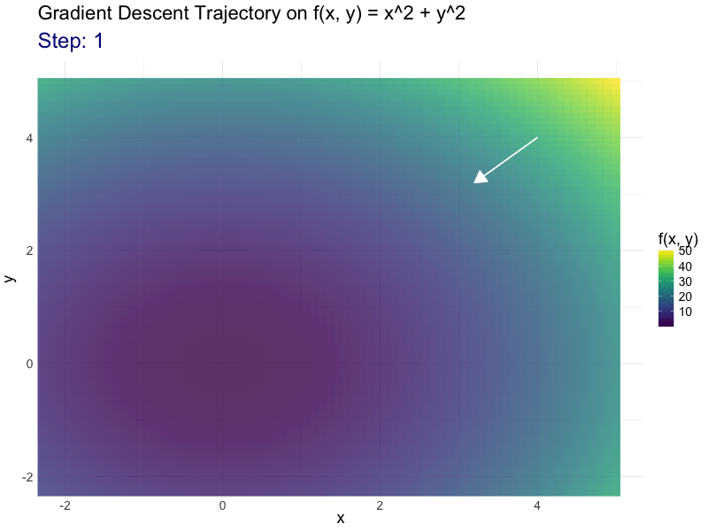
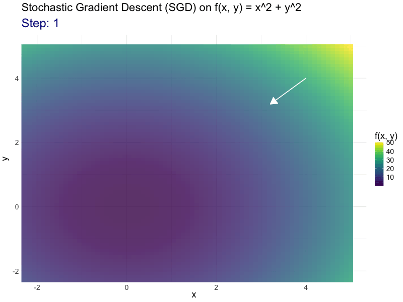

Team Name: Stat Squad
Members: Prasanth Gubbala, Xenia De Gracia, Rishab RK, Prudhvi Kandregula
GitHub URL: https://github.com/INFO-526-FA24/project-2-stat-squad
Gradient Descent
Stochastic Gradient Descent (SGD)
Momentum Optimizer

Members: Prasanth Gubbala, Xenia De Gracia, Rishab RK, Prudhvi Kandregula
GitHub URL: https://github.com/INFO-526-FA24/project-2-stat-squad